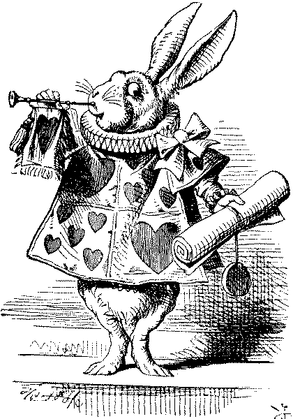
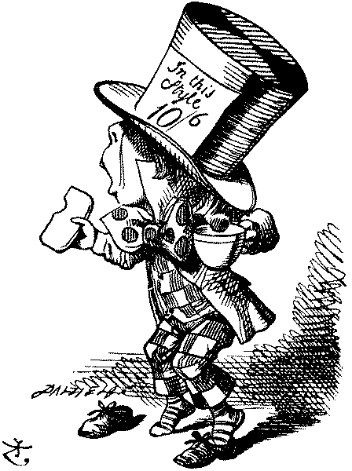
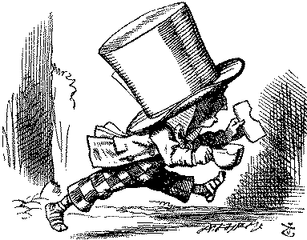

THE King and Queen of Hearts were seated on their throne when they arrived, with a great crowd assembled about them--- all sorts of little birds and beasts, as well as the whole pack of cards: the Knave was standing before them, in chains, with a soldier on each side to guard him; and near the King was the White Rabbit, with a trumpet in one hand, and a scroll of parchment in the other. In the very middle of the court was a table, with a large dish of tarts upon it: the looked so good, that it made Alice qite hungry to look at them -- "I wish they'd get the trial done," she thought, "and hand round the refreshments!" But there seemed to be no chance of this; so she began looking at everything about her to pass away the time.
Alice had never been in a court of justice before, but she had read about them in books, and she was quite pleased to find that she knew the name of nearly everything there. "That's the judge," she said to herself, "because of his great wig."
The judge, by the way, was the King; and, as he wore his crown over the wig (look at the frontispiece if you want to see how he did it), he did not look at all comfortable, and it was certainly not becoming.
"And that's the jury-boy," thought Alice; "and those twelve creatures," (she was obliged to say "creatures," you see, because some of them were animals, and some were birds,) "I suppose they are the jurors." She said this last word two or thre times over to herself, being rather proud of it: for she thought, and rightly too, that very few littel girls of her age knew the meaning of it all. However, "jurymen" would have done just as well.
The twelve jurors were all writing very busily on slates. "What are they doing?" Alice whispered to the Gryphon. "They can't have anything to put down yet, before the trial's begun."

"They're putting down their names," the Gryphon whispered in reply, "for fear they should forget them before the end of the trial."
Stupid things!" Alice began in a load indignant voice; but she stopped herself hastily, for the White Rabitt cried out "Silence in the Court!", and the King put on his spectacles and looked anxiously round, to make out who was talking.
Alice could see, as well as if she were looking over their shoulders, that all the jurors were writing down "Stupid things!" on their slates, and she could even make out that one of them didn't know how to spell "stupid," and that he had to ask his neighbour to tell him. "A nice muddle their slates'll be in, before the trial's over!" thought Alice.
ne of the jurors had a pencil that squeaked. This, of course, Alice cout not stand, and she wetn round the court and got behind him, and very soon found an opportunity of taking it away. She did it so quickly that the poor little juror (it was Bill, the Lizard) could not make out at all what had become of it; so, after hunting all about for it, he was obliged to write with one finger for the rest of the day; and this was of very little use, as it left no mark on the slate.
"Herald, read the accusation!" said the King.
On this the White Rabbit blew three blasts on the trumpet, an then unrolled the parchment-scroll, and read as follows:---
The Queen of Hearts, she made some tarts, All on a summer day: The Knave of Hearts, he stole those tarts And took them quite away!
"Consider your verdict," the Kind said to the jury. "Not yet, not yet!" the Rabbit hastily interrupted. "There's a great deal to come before that!"
"Call the first witness," said the King; and the White Rabbit blew three blasts on the trumpet, and called out "First witness!"
The first witness was the Hatter. He came in with a teacup in one hand and a piece of brea-and-butter in the other. "I beg your pardon, your Majesty," he began, "for bringing these in; but I hadn't quite finished my tea when I was sent fore."
"You ought to have finished," said the King. "When did you begin?"
The Hatter looked at the March Hare, who had followed him into the court, arm-in-arm with the Dormouse. "Fourteenth of March, I think it was," he said.
"Fifteenth," said the March Hare.
"Sixteenth," said the Dormouse.
"Write that down," the King said to the jury; and the jury eagerly wrote down all three dates on their slates, and then added them up, and reduced the answer to shillings and pence.
"Take off your hat," the king said to the Hatter.
"It isn't mine," said the Hatter.
"Stolen!" the King exclaimed, turning to the jury, who instantly made a memorandum of the fact.
"I keep them to sell," the Hatter added as an explanation. "I've non of my own. I'm a hatter."
Here the Queen put on her spectacles, and began staring hard at the Hatter, who turned pale and fidgeted.
"Give your evidence," said the King; "and don't be nervous, or I'll have you executed on the spot."
This did not seem to encourage the witness at all: he kept shifting from one foot to the other, looking uneasily at the Queen, and in his confusion he bit a large piece out of his teacup instead of the bread-and-butter.
Just at this moment Alice felt a very curious sensation, which puzzled her a good deal until she made out what it was: she was beginning to grow larger again, and she thought at first she would get up and leave the court; but on second thoughts she decided to remain where she was as long as there was room for her.
"I wish you wouldn't squeeze so," said the Dormouse, who was sitting next to her. "I can hardly breathe."
"I can't help it," said Alice very meekly: "I'm growing."
"You've got no right to grow here," said the Dormouse.
"Don't talk nonsense," said Alice more boldly: "you know you're groing too."
"Yes, but I grow at a reasonable pace," said the Dormouse: "not in that ridiculous fashion." And he got up very sulkily and crossed over to the other side of the court.
All this time the Queen had never left off staring at the Hatter, and, just as the Dourmouse crossed the court, she said, to one of the officers of the court, "Bring me the list of the singers in the last concert!" on which the wretched Hatter trembled so, that he shook off both his shoes.
"Give your evidence," the King repeated angrily, "or I'll have you executed, whether you're nervous or not."
"I'm a poor man, your Majesty," the Hatter began, in atrembling voice, "and I hadn't begun my tea -- not above a week or so -- and what with the bread-and-butter getting so thin -- and the twinkling of the tea---"
"The twinkling of what?" said the King.
"It begun with the tea," the Hatter replied.
"Of course twinkling begins with a T!" said the King sharply. "Do you take me for a dunce? Go on!"
"I'm a poor man," the Hatter went on, "and most things twinkled after that -- only the March Hare said---"
"I didn't!" the March Hare interrupted in a great hurry.
"You did!" said the Hatter.
"I deny it!" said the March Hare.

"He denies it," said the King: "leave out that part."
"Well, at any rate, the Dormouse said---" the Hatter went on, looking anxiously round to see if he would deny it too; but the Dormouse denied nothing, being fast asleep.
"After that," continued the Hatter, "I cut some more bread-and-butter---"
"But what did the Dormouse say?" one of the jury asked.
"That I can't remember," said the Hatter.
"You must remember," remarked the King, "or I'll have you executed."
The miserable Hatter dropped his teacut and bread-and-butter, and went down on one knee. "I'm a poor man, your Majesty," he began.
"You're a very poor speaker," said the King.
Here one of the guinea-pigs cheered, and was immediately suppressed by the officers of the court. (As that is rather a hard word, I will just explain to you how it was done. They had a large canvas bag, which tied up at the mouth with strings: into this they slipped the guinea-pig, head first, and then sat upon it.)
"I'm glad I've seen that done," thought Alice. "I've so often read in the newspapers, at the end of trials, `There was some attempt at applause, which was immediately suppressed by the officers of the court,' and I never understood what it meant till now."
"If that's all you know about it, you may stand down," continued the King.
"I can't go lower," said the Hatter: "I'm on the floor, as it is."
"Then they may sit down," the King replied.
Here the other guinea-pig cheered and was suppressed.
"Come, that finishes the guinea-pigs!" though Alice. "Now we shall get on better."
"I'd rather finish my tea." said the Hatter, with an anxious look at the Queen, who was reading the list of singers.
"You may go," said the King, and the Hatter hurriedly left the court, without even waiting to put his shoes on.

"---and just take this head off outside," the Queen added to one of the officers; but the Hatter was out of sight before the officer could get to the door.
"Call the next witness!" said the King.
The next witness was the Duchess's coock. She carried the pepper-box in her hand, and Alice guessed who it was, even before she got into the court, by the way the people near the door began sneezing all at once.
"Give your evidence," said the King.
"Sha'n't," said the cook.
The King looked anxiously at the White Rabbit, who said, in a low voice, "Your Majesty must cross-examine this witness."
"Well, if I must, I must," the King said with a melancholy air; and, after foling his arms and frowning at the cook till his eyes were nearly out of sight, he said, in a deep voice, "What are tarts made of?"
"Pepper, mostly," said the cook.
"Treacle," said a sleepy voice behind her.
"Collar that Dormouse!" the Queen shrieked out. "Behead that Dormouse! Turn that Dormouse out of court! Suppress him! Pinch him! Off with his whiskers!"
For some minutes the whole court was in confusion, getting the Dormouse turned out, and, by the time they had settled down again, the cook had dissapeared.
"Never mind!" said the King, with an air of great relief. "Call the next witness." And, he added, in an under-tone to the Queen, "Really, my dear, you must cross-examine the next witness. It quite makes my forehead ache!
Alice watched the White Rabbit as he fumbled over the list, feeling very curious to see what the next witness would be like,"---for they haven't got much evidence yet," she said to herself. Imagine her surprise, when the White Rabbit read out, at the top of his shrill little voice, the name "Alice!"